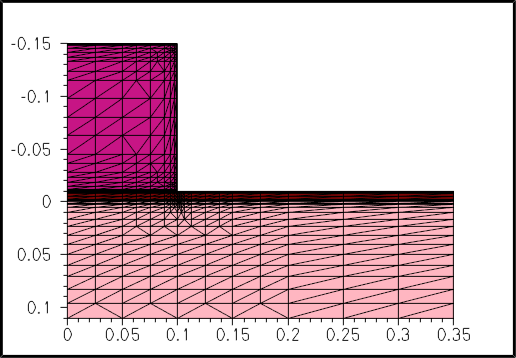
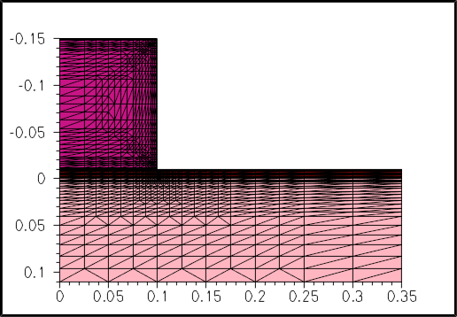
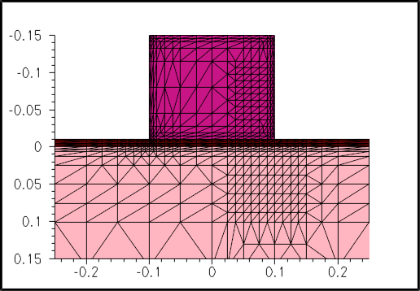
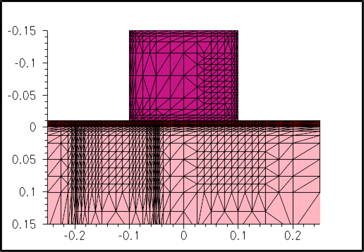
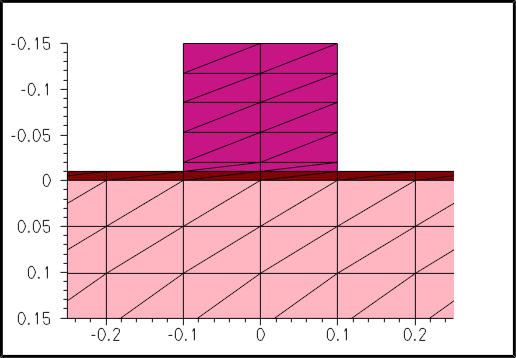

Sentaurus Process
9. Special Focus: Meshing
9.1 Overview
9.2 Initialization
9.3 Remeshing
9.4 Refinement Boxes
Objectives
- To demonstrate the most important remeshing options available in Sentaurus Process.
9.1 Overview
The files discussed in this section are part of the Sentaurus Workbench project Remeshing. The complete project can be investigated from within Sentaurus Workbench in the directory Applications_Library/GettingStarted/sprocess/Remeshing.
To show how to work with the capabilities of Sentaurus Mesh in Sentaurus Process, a simple structure is remeshed with various meshing options.
The generated mesh is anisotropic. The mesh spacing is controlled with the set.min.normal.size and set.normal.growth.ratio arguments of the grid command.
9.2 Initialization
The initial (line) mesh and a simple structure are defined:
line x location= -0.15 spacing=0.01 tag=GateTop
line x location= -0.02 spacing=0.005
line x location= -0.01 spacing=0.005 tag=OxTop
line x location= 0.0 spacing=0.005 tag=SiTop
line x location= 0.05 spacing=0.01
line x location= 0.5 spacing=0.05
line x location= 1.0 spacing=0.2 tag=SiBottom
line y location= 0.0 spacing=0.05 tag=Mid
line y location= 0.1 spacing=0.05 tag=Gate
line y location= 0.4 spacing=0.05 tag=Right
region Silicon xlo=SiTop xhi=SiBottom ylo=Mid yhi=Right
region Oxide xlo=OxTop xhi=SiTop ylo=Mid yhi=Right
region PolySilicon xlo=GateTop xhi=OxTop ylo=Mid yhi=Gate
init concentration=1.00e+15 field=Phosphorus
struct tdr=grid_mg0
See Section 3.2 Defining the Initial 2D Grid and Simulation Domain for details.
Figure 1. Initial line mesh.
9.3 Remeshing
After creating the initial tensor mesh, the mesh can be refined with:
grid set.min.normal.size=0.01 set.normal.growth.ratio=2.0 grid remesh
The normal mesh spacing at the interface is set with set.min.normal.size. Away from the interface, the mesh expands and the expansion rate is set with set.normal.growth.ratio.
Figure 2. Remeshing with normal mesh spacing (0.01).
To highlight the effect of the normal mesh spacing, the resulting mesh for a five-times finer normal mesh spacing is shown:
grid set.min.normal.size=0.002 set.normal.growth.ratio=2.0 grid remesh

Figure 3. Remeshing for five-times finer normal mesh spacing (0.002).
To highlight the effect of the expansion rate, the resulting mesh for a lower expansion rate is given:
grid set.min.normal.size=0.002 set.normal.growth.ratio=1.2 grid remesh

Figure 4. Remeshing with lower expansion rate of mesh.
The effects of the various settings are clearly observed in Figure 5.

Figure 5. Animation of different meshing and remeshing steps.
9.4 Refinement Boxes
In process simulations, a good resolution at interfaces is important and certain regions in the bulk must be refined properly, for example, to adequately resolve a steep doping profile.
This can be accomplished with refinement boxes:
refinebox min= {-0.1 0.05} max= {0.1 0.15} xrefine= {0.015} \
yrefine= {0.015} all add
grid remesh
The extent of the refinement box is defined with the min and max arguments.
The xrefine and yrefine arguments control the mesh spacing. If only one number is given, the mesh spacing is constant throughout the refinement box. The option all activates the refinement box for all materials, and the option add ensures that previously defined refinement boxes are maintained.

Figure 6. Refinement box used for better resolution at interfaces.
In the following example, the refinement box is activated in silicon only, and the mesh in the y-direction is nonuniform. The spacing at the left side of the box is 5 nm; in the center, it is 15 nm; and at the right side, it is 2.5 nm.
refinebox min= {-0.1 -0.2} max= {0.1 -0.05} xrefine= {0.015} \
yrefine= {0.005 0.015 0.0025} Silicon add
grid remesh

Figure 7. Activation of refinement box in silicon.
The effects of the various settings can be seen even better in Figure 8.

Figure 8. Animation of effects of various settings previously described.
Copyright © 2022 Synopsys, Inc. All rights reserved.